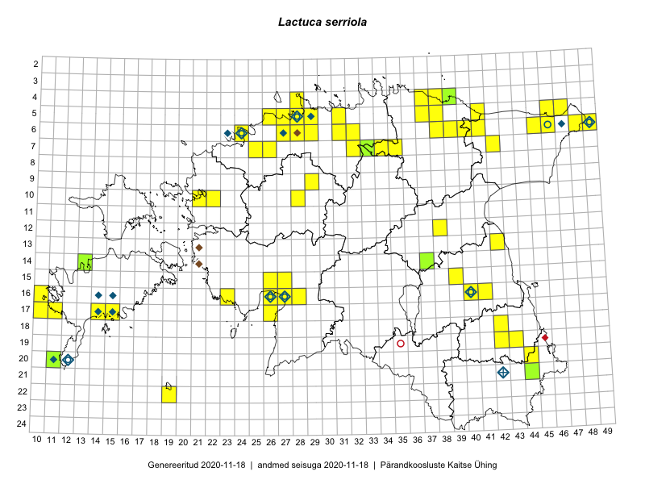

Lactuca serriola
Uuendatud: 2016-12-08
Kaardile koondatud taksonid: Lactuca scariola L.; Lactuca serriola L.

Kaart põhineb 93 vaatlusel. Taime on leitud 49 ruudust.
| Ruut | Vaatleja(d) | Vaatlusaeg | Kirje tüüp | Viide andmebaasikirjele |
|---|---|---|---|---|
| 06-27 | Toomas Kukk | 2015-06-19 | punkt | vaata PlutoFis |
| 16-41 | Peedu Saar, Eerik Leibak | 2015-07-30 | punkt | vaata PlutoFis |
| 10-28 | Ott Luuk, Toomas Kukk, Thea Kull, Peedu Saar, Timo Luhamäe | 2015-06-25 | ruut/ala | vaata PlutoFis |
| 10-28 | Ott Luuk | 2015-06-25 | punkt | vaata PlutoFis |
| 16-41 | Peedu Saar, Eerik Leibak | 2015-07-30 | ruut/ala | vaata PlutoFis |
| 06-41 | Peedu Saar, Sander Laherand | 2015-06-01 | ruut/ala | vaata PlutoFis |
| 06-41 | Toomas Kukk, Tiit Hallikma | 2015-07-24 | ruut/ala | vaata PlutoFis |
| 16-10 | Peedu Saar | 2015-08-07 | punkt | vaata PlutoFis |
| 16-10 | Peedu Saar | 2015-08-07 | ruut/ala | vaata PlutoFis |
| 05-47 | Tiit Hallikma, Toomas Kukk | 2015-07-22 | ruut/ala | vaata PlutoFis |
| 05-47 | Tiit Hallikma, Toomas Kukk | 2015-07-22 | punkt | vaata PlutoFis |
| 06-41 | Tiit Hallikma, Toomas Kukk | 2015-07-24 | punkt | vaata PlutoFis |
| 06-48 | Ott Luuk, Hannes Pehlak | 2015-07-21 | ruut/ala | vaata PlutoFis |
| 06-45 | Thea Kull, Eerik Leibak | 2015-07-20 | ruut/ala | vaata PlutoFis |
| 06-45 | Thea Kull, Eerik Leibak | 2015-07-20 | punkt | vaata PlutoFis |
| 16-27 | Vilma Kuusk | 2012-09-11 | punkt | vaata PlutoFis |
| 13-42 | Thea Kull, Meeli Mesipuu | 2015-08-14 | punkt | vaata PlutoFis |
| 17-10 | Mari Reitalu, Oliver Parrest | 2015-08-04 | ruut/ala | vaata PlutoFis |
| 16-26 | Indrek Tammekänd | 2015-05-11 | ruut/ala | vaata PlutoFis |
| 12-38 | Ulvi Selgis | 2015-08-12 | ruut/ala | vaata PlutoFis |
| 18-42 | Kirsi Loide, Marje Loide | 2015-07-28 | ruut/ala | vaata PlutoFis |
| 17-11 | Mari Reitalu, Triin Reitalu | 2015-05-10 | ruut/ala | vaata PlutoFis |
| 07-33 | Meeli Mesipuu | 2015-06-29 | ruut/ala | vaata PlutoFis |
| 07-33 | Meeli Mesipuu | 2015-06-29 | punkt | vaata PlutoFis |
| 13-42 | Meeli Mesipuu, Thea Kull | 2015-08-14 | ruut/ala | vaata PlutoFis |
| 06-40 | Mari Metsoja, Jaak-Albert Metsoja | 2015-07-24 | ruut/ala | vaata PlutoFis |
| 07-42 | Mari Metsoja, Jaak-Albert Metsoja | 2015-07-23 | ruut/ala | vaata PlutoFis |
| 20-11 | Mari Reitalu, Triin Reitalu | 2015-07-19 | ruut/ala | vaata PlutoFis |
| 05-29 | Peedu Saar, Sander Laherand | 2013-07-07 | ruut/ala | vaata PlutoFis |
| 17-10 | Oliver Parrest, Mari Reitalu | 2015-08-04 | punkt | vaata PlutoFis |
| 06-27 | Tõnu Ploompuu | 2015-08-11 | ruut/ala | vaata PlutoFis |
| 04-39 | Toomas Kukk, Thea Kull | 2016-05-26 | ruut/ala | vaata PlutoFis |
| 06-28 | Tõnu Ploompuu | 2015-06-06 | ruut/ala | vaata PlutoFis |
| 05-28 | Peedu Saar | 2016-06-01 | punkt | vaata PlutoFis |
| 05-28 | Peedu Saar | 2016-06-01 | ruut/ala | vaata PlutoFis |
| 10-21 | Tõnu Ploompuu | 2015-05-02 | ruut/ala | vaata PlutoFis |
| 10-21 | Tõnu Ploompuu | 2015-08-21 | ruut/ala | vaata PlutoFis |
| 10-22 | Tõnu Ploompuu | 2015-05-20 | ruut/ala | vaata PlutoFis |
| 19-43 | Sander Laherand, Ott Luuk | 2016-06-17 | ruut/ala | vaata PlutoFis |
| 22-19 | Silvia Pihu | 2015-07-03 | ruut/ala | vaata PlutoFis |
| ? | Silvia Pihu | 2015-07-03 | punkt | vaata PlutoFis |
| 20-44 | Peedu Saar, Tarmo Niitla | 2016-06-15 | ruut/ala | vaata PlutoFis |
| 05-26 | Tiina Elvisto, Eerik Leibak | 2016-07-04 | ruut/ala | vaata PlutoFis |
| 05-26 | Tiina Elvisto, Eerik Leibak | 2016-07-04 | punkt | vaata PlutoFis |
| 12-38 | Ulvi Selgis | 2016-07-08 | punkt | vaata PlutoFis |
| 05-37 | Tõnu Ploompuu, Eerik Leibak | 2016-07-27 | ruut/ala | vaata PlutoFis |
| 05-37 | Tõnu Ploompuu, Eerik Leibak | 2016-07-27 | punkt | vaata PlutoFis |
| 06-49 | Toomas Kukk | 2016-07-23 | ruut/ala | vaata PlutoFis |
| 04-37 | Thea Kull, Eerik Leibak, Susanna Vain | 2016-07-26 | ruut/ala | vaata PlutoFis |
| 20-44 | Tarmo Niitla, Peedu Saar | 2016-06-15 | punkt | vaata PlutoFis |
| 04-28 | Sander Laherand, Tõnu Ploompuu, Nele Jõessar | 2016-07-25 | punkt | vaata PlutoFis |
| 21-44 | Karin Kikas, Peedu Saar | 2016-08-18 | punkt | vaata PlutoFis |
| 05-29 | Toomas Kukk, Sander Laherand | 2016-08-29 | ruut/ala | vaata PlutoFis |
| 17-15 | Toomas Kukk, Meeli Mesipuu, Johannes Kõdar | 2016-08-11 | punkt | vaata PlutoFis |
| 06-29 | Toomas Kukk, Sander Laherand | 2016-08-29 | punkt | vaata PlutoFis |
| 05-31 | Toomas Kukk, Sander Laherand | 2016-08-30 | punkt | vaata PlutoFis |
| 05-31 | Toomas Kukk, Sander Laherand | 2016-08-30 | punkt | vaata PlutoFis |
| 04-39 | Thea Kull, Toomas Kukk | 2016-09-05 | ruut/ala | vaata PlutoFis |
| 04-28 | Sander Laherand, Tõnu Ploompuu, Nele Jõessar | 2016-07-25 | ruut/ala | vaata PlutoFis |
| 04-37 | Susanna Vain, Eerik Leibak, Thea Kull | 2016-07-26 | punkt | vaata PlutoFis |
| 06-32 | Toomas Kukk, Peedu Saar | 2016-09-08 | ruut/ala | vaata PlutoFis |
| 05-38 | Thea Kull, Toomas Kukk | 2016-09-06 | ruut/ala | vaata PlutoFis |
| 06-31 | Toomas Kukk, Peedu Saar | 2016-09-08 | punkt | vaata PlutoFis |
| 04-39 | Thea Kull, Toomas Kukk | 2016-09-05 | punkt | vaata PlutoFis |
| 05-28 | Toomas Kukk, Peedu Saar | 2016-08-03 | ruut/ala | vaata PlutoFis |
| 05-28 | Toomas Kukk, Peedu Saar | 2016-08-03 | punkt | vaata PlutoFis |
| 04-39 | Thea Kull, Toomas Kukk | 2016-05-26 | punkt | vaata PlutoFis |
| 05-31 | Sander Laherand, Toomas Kukk | 2016-08-30 | ruut/ala | vaata PlutoFis |
| 06-29 | Sander Laherand, Toomas Kukk | 2016-08-29 | ruut/ala | vaata PlutoFis |
| 07-33 | Peedu Saar, Toomas Kukk | 2016-09-15 | punkt | vaata PlutoFis |
| 20-11 | Meeli Mesipuu | 2016-09-25 | punkt | vaata PlutoFis |
| 06-32 | Peedu Saar, Toomas Kukk | 2016-09-08 | punkt | vaata PlutoFis |
| 06-31 | Peedu Saar, Toomas Kukk | 2016-09-08 | ruut/ala | vaata PlutoFis |
| 06-24 | Peedu Saar, Ott Luuk | 2016-09-06 | punkt | vaata PlutoFis |
| 07-25 | Helle Mäemets, Tiina Elvisto | 2016-07-05 | ruut/ala | vaata PlutoFis |
| ? | Helle Mäemets, Tiina Elvisto | 2016-07-05 | punkt | vaata PlutoFis |
| ? | Helle Mäemets, Tiina Elvisto | 2016-07-05 | punkt | vaata PlutoFis |
| 06-38 | Tõnu Ploompuu | 2016-07-17 | ruut/ala | vaata PlutoFis |
| 05-38 | Thea Kull, Toomas Kukk | 2016-09-06 | punkt | vaata PlutoFis |
| 05-29 | Sander Laherand, Toomas Kukk | 2016-09-29 | punkt | vaata PlutoFis |
| 14-13 | Toomas Kukk, Meeli Mesipuu, Mari Reitalu | 2016-10-06 | ruut/ala | vaata PlutoFis |
| 05-41 | Tiit Hallikma, Tõnu Ploompuu | 2016-07-26 | punkt | vaata PlutoFis |
| 05-41 | Tiit Hallikma, Tõnu Ploompuu | 2016-07-26 | ruut/ala | vaata PlutoFis |
| 16-40 | Peedu Saar | 2016-05-22 | punkt | vaata PlutoFis |
| 16-40 | Peedu Saar | 2016-05-22 | ruut/ala | vaata PlutoFis |
| 14-13 | Toomas Kukk, Ott Luuk | 2012-09-07 | punkt | vaata PlutoFis |
| 15-27 | Kadi-Liis Kesler, Tiina Elvisto | 2015-07-28 | ruut/ala | vaata PlutoFis |
| 05-46 | Kadi-Liis Kesler, Tiina Elvisto | 2015-07-30 | ruut/ala | vaata PlutoFis |
| 17-15 | Meeli Mesipuu, Toomas Kukk, Johannes Kõdar | 2016-08-11 | ruut/ala | vaata PlutoFis |
| 04-28 | Kadi-Liis Kesler, Tiina Elvisto | 2015-08-12 | ruut/ala | vaata PlutoFis |
| 14-13 | Meeli Mesipuu, Toomas Kukk, Mari Reitalu | 2016-10-06 | punkt | vaata PlutoFis |
| 19-43 | Ott Luuk, Sander Laherand | 2016-06-17 | punkt | vaata PlutoFis |
| 07-26 | Jaak-Albert Metsoja, Mari Metsoja | 2016-07-04 | ruut/ala | vaata PlutoFis |